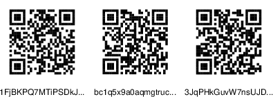
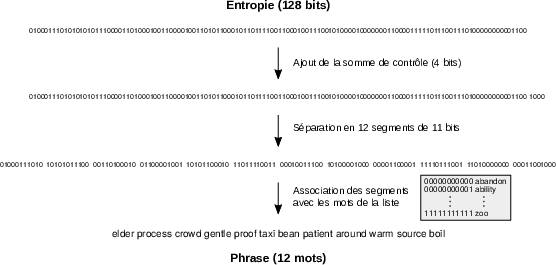
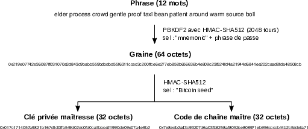
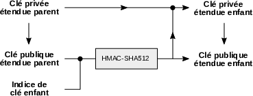
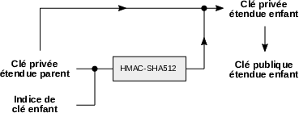

7 The Value of Information
Bitcoin is a concept of free digital currency. As such, it must guarantee ownership of accounting units without requiring identification from a trusted third party. To achieve this, it relies on a digital signature algorithm that authorizes transactions through the knowledge of a piece of information—the private key.
For the first time in human history, Bitcoin thus makes it possible to sovereignly possess a rival digital asset—that is, something that cannot simply be copied. Since this possession is exercised through the exclusive knowledge of private keys, information is more valuable than ever. This leads to a number of consequences that differ from the traditional model of property.
In this technical chapter, we will explore how data is represented within Bitcoin, how cryptography and digital signatures are utilized, and what hashing entails. Then, we will describe how keys and addresses are generated, what wallets are, and how they are structured. Finally, we will examine the implications of this model, starting with the responsibility conferred upon the keeper of the keys.
Data Representation
In computing, information is a set of data stored on a physical medium. It is commonly represented in the form of binary digits (called bits, a contraction of “binary digits”) to reflect the operation of the digital electronics used in computers. The two possible values (0 and 1) correspond to two distinct electrical states, such as the presence or absence of current.
In this context, information is essentially a number. Even if it appears as multimedia content, information must be encoded to be processed and interpreted by computers. Typically, text can be encoded in ASCII or UTF-8, images in JPEG or PNG, music in MP3 or FLAC, and videos in MPEG or H.264. In this way, everything reduces to numbers.
In our modern Western world, we are accustomed to representing numbers using a numeral system with 10 digits, based on base 10. This is a convention linked to the fact that we have long counted using our 10 fingers. But the decimal system is not the only one that exists, and computing uses several other bases.
First, as mentioned, computers are based on a binary system composed of two digits (0 and 1). These two digits are used to write numbers: 0, 1, 10, 11, 100, etc. In this system, the number 21 (base 10) is expressed as follows:
\[21 = 16 + 4 + 1 = \mathbf{1} \times 2^4 + \mathbf{0} \times 2^3 + \mathbf{1} \times 2^2 + \mathbf{0} \times 2^1 + \mathbf{1} \times 2^0 = \mathtt{0b10101}\]
The prefix 0b is usually placed before the number to indicate that it is expressed in binary.
Another numeral system commonly used in computing is the hexadecimal system, which is composed of 16 digits symbolized by the 10 Arabic numerals and the first six letters of the Latin alphabet:
0123456789abcdefIn this base, “a” represents the number 10, “b” represents 11, and so on up to “f,” which represents 15.
The hexadecimal system allows for a condensed representation of data. In particular, it is very suitable for writing bytes, which are sets of 8 bits and can be symbolized by 2 hexadecimal characters. In this way, the number 2008 (base 10) is written:
\[2008 = 1792 + 208 + 8 = 7 \times 16^2 + 13 \times 16^1 + 8 \times 16^0 = \mathtt{0x7d8}\]
We usually place the prefix 0x before the number to indicate that we are using the hexadecimal system.
In Bitcoin, two additional numeral bases are involved, notably to represent certain crucial information such as private keys and addresses. The first is base 58. In this system with 58 digits, numbers are written using all alphanumeric characters (Arabic numerals, lowercase Latin letters, uppercase Latin letters) except for the characters 0 (zero), O (uppercase o), l (lowercase L), and I (uppercase i), which can be confused with each other and cause errors. The digits of this base are, in order:
123456789ABCDEFGHJKLMNPQRSTUVWXYZabcdefghijkmnopqrstuvwxyzThe second is base 32, less compact but more suitable for QR codes. The symbols used in this base are Arabic numerals and lowercase Latin letters, excluding 1, b, i, and o to avoid confusion, namely the following characters:
qpzry9x8gf2tvdw0s3jn54khce6mua7lThese encoding systems allow for the raw representation of information. However, information can also be encoded in a particular format that includes a checksum. A checksum is a short sequence of numerical data calculated from a larger set of data, allowing one to verify, with high probability, that the integrity of this set has been preserved during copying, storage, or transmission. It is generally placed after the information so that the whole can then be represented in the appropriate base.
In the case of Bitcoin, the checksum is essential for transmitting sensitive information such as private keys and addresses, so that a typing error is immediately detected. The three encodings that implement this type of checksum in BTC are the Base58Check, Bech32, and Bech32m formats. The first was implemented by Satoshi in the early days of the cryptocurrency and involves calculating a checksum through the truncated cryptographic hash of the information. It concerns private keys and so-called “legacy” addresses, such as the address 1FjBKPQ7MTiPSDkJ2ZwPgAXUKQ8yoGbVJX.
The other two emerged in 2017 and 2021 (respectively). They involve checksums using BCH codes (Bose–Chaudhuri–Hocquenghem), which not only detect the presence of typos but also locate them. These formats are used to encode (respectively) native SegWit addresses, such as bc1q5x9a0aqmgtrucm4l5n0y8e4kxfy9xm4udhygr2, and public keys used in Taproot, such as bc1pqlqqhzrg60v5h87r8lugusrddgz0j306shcupthy0tdqaqurwn8qr8qsej. The Bech32 format is also used to encode payment requests on the Lightning network.
Cryptography and Bitcoin
Cryptography is the mathematical discipline aimed at securing communication in the presence of malicious third parties. Its initial role was to conceal information through encryption but later expanded to authenticating the sender of a message (through asymmetric cryptography) and verifying data (using one-way functions). Today, cryptography ensures the confidentiality (encryption), authenticity (signature), and integrity (hashing) of transmitted information.
Bitcoin is a cryptographic product. Technically, it relies on methods developed in the last decades of the 20th century, such as Merkle trees or proof of work. Ideologically, it stems from the cypherpunk movement, which advocated the proactive use of cryptography to safeguard individuals’ privacy and freedom on the Internet. In both senses, it is described as a cryptocurrency.
In the context of Bitcoin, encryption can be useful for protecting private keys or sending messages to other users. In many wallets, it is common for private keys to be encrypted using a password (secret key) to prevent malicious individuals with access to the device from spending the funds. In Electrum, for example, private keys are encrypted using the symmetric algorithm AES-256-CBC.
However, contrary to what one might imagine, no encryption is directly involved in the Bitcoin protocol: all data is public due to the system’s open and permissionless functioning. Bitcoin is not a cryptographic product because transactions are encrypted (they are not) but because it relies on the other two functions of cryptography: authentication through digital signatures and data verification with hashing. Digital signatures authenticate the person initiating a transaction to assure the network that they are the owner of the bitcoins being spent. Hashing is involved in key and address derivation, block construction, and mining operations.
Digital Signatures
Since Bitcoin is designed for the exchange of value, it fundamentally relies on transactions. These are, in most cases, transfers of units between two owners, although they can take much more complex forms, as we will see in Chapter 12. The unit transferred is typically the satoshi, which is the smallest unit (indivisible) managed by the protocol and corresponds to one hundred millionth of a bitcoin: 1 satoshi = 0.00000001 bitcoin. It was named in honor of Bitcoin’s creator, Satoshi Nakamoto1.
1 The term “satoshi” was initially proposed by ribuck on the Bitcoin forum, first in November 2010 to designate 0.01 bitcoin, then in February 2011 to name the smallest unit. The name was then adopted by the community. — ribuck, Re: How did “satoshi” become the name of the base unit?, 09/01/2014 20:49:00 UTC: https://bitcointalk.org/index.php?topic=407442.msg4415850#msg4415850.
In the protocol, the digital signature is used to authorize these fund movements. As described in Chapter 5, this process is based on a pair of keys: a private key, which is secret and signs the message, and a public key, known to all, which allows one to verify the produced signature. In the case of a simple transfer, the message to be signed is the transaction, and the signer of the message is the owner of the satoshis being sent.
The signature algorithm produces a different signature for each transaction. It’s not just about revealing a secret to make a spend, which would allow anyone on the network to attempt to spend the funds, but about producing data that can then be verified by the network as expected.
This functioning gives a fundamental role to the private key. Anyone who knows it can access the funds it protects and seize them. This is why it must remain absolutely secret: whoever knows it becomes the de facto owner of the bitcoins concerned.
The main algorithm used in Bitcoin is ECDSA (Elliptic Curve Digital Signature Algorithm), a variant of DSA using elliptic curve cryptography. The algorithm involves complex algebraic notions, but we can attempt to briefly explain how it works.
The variant of ECDSA used in Bitcoin is based on the elliptic curve secp256k12, which is used to derive the public key from the private key, to sign transactions using the private key, and to verify signatures using the public key. The mathematical equation of this curve is ( y^2 = x^3 + 7 ), where the coordinates ( x ) and ( y ) evolve within the finite field of integers modulo ( p ), where ( p ) is a specific prime number3 less than ( 2^{256} ).
2 The name secp256k1 might seem obscure, but each letter is significant. The acronym SEC stands for “Standards for Efficient Cryptography,” the work from which it originates (https://www.secg.org/SEC2-Ver-1.0.pdf). The P-256 indicates that the prime number \(p\) used is encoded on 256 bits. The “k” indicates it’s a Koblitz curve: parameters are chosen to make operations more efficient and were not selected randomly (“r”). The “1” denotes the index of the curve relative to other similar curves.
3 The chosen prime number for secp256k1 is: \(p = 2^{256} - 2^{32} - 2^9 - 2^8 - 2^7 - 2^6 - 2^4 - 1\).

An addition is defined on this curve so that the sum of two points is also a point on the curve[^316]. Multiplication by a scalar is defined as adding the same point multiple times: ( m~P = P + + P(m) ). By fixing a point on the curve, called the base point and noted ( G )[^317], we can define an operation transforming an integer ( d ) into a point on the curve: ( Q = d~G ).
These operations can be represented geometrically on the curve. For example, the geometric equivalent of doubling point ( G ) (adding it to itself) involves drawing the tangent at the point, considering the intersection of this tangent with the curve, and taking its opposite, as shown in Figure 7.2. All these operations are non-reversible.

By choosing a private key ( k ), we can calculate the public key ( K ) which is ( K = k~G ). Since multiplication by a scalar is non-reversible, transitioning from the private key to the public key constitutes a one-way function. In other words, it is practically impossible to find the private key from the public key without trying every possibility one by one.
Let’s see what this looks like in practice. The private key is a randomly chosen number. It must be between ( 1 ) and ( n - 1 ), where ( n ) is the order of point ( G ) (which is close to ( 2^{256} )):
\[n = \mathtt{0xfffffffffffffffffffffffffffffffebaaedce6af48a03bbfd25e8cd0364141}\]
For example, the following hexadecimal number is perfectly valid to serve as a private key:
\[k = \mathtt{0x999bb87eea489b2fc6219226e7b95d9083a3b627246ea852e85567ac4d72444f}\]
The public key is a point on the curve defined by ( K = k~G ). If we compute this point from the above private key, we obtain:
\[\begin{aligned} K = &~(\mathtt{0xf6a6c7c39c88b767bfac4ac687c3ff32372e76c9fb633e2278e54472e300b3bd}, \\ &~\mathtt{0x5822f24e0fdb4e568f97a7fff246c07ba486c1756f82971765cc9cf8e45ff5e6}) \end{aligned}\]
In Bitcoin, this public key is represented in serialized form. It can be uncompressed, in which case it is prefixed by 0x04. In our case, its serialized expression is:
04 f6a6c7c39c88b767bfac4ac687c3ff32372e76c9fb633e2278e54472e300b3bd
5822f24e0fdb4e568f97a7fff246c07ba486c1756f82971765cc9cf8e45ff5e6There is also a compressed representation of the public key. This is possible due to the symmetry of the curve with respect to the x-axis: indeed, the fact that point ( (x, y) ) belongs to the curve implies that point ( (x, -y) ) also does. To compress the information, it suffices to provide the abscissa ( x ) and a prefix that is 0x02 if ( y ) is even or 0x03 if ( y ) is odd4. We can then recover ( y ) using the curve’s equation. In our case, the compressed public key is:
4 In the finite field \(\mathbb{F}_p\), taking the opposite of a non-zero element \(y\) reverses its parity. Indeed, if \(y \in [\![ 1, p - 1 ]\!]\), then \(-y + p \in [\![ 1, p - 1 ]\!]\).
02 f6a6c7c39c88b767bfac4ac687c3ff32372e76c9fb633e2278e54472e300b3bdThis format reduces the size of transactions (and thus fees), which is why it is used in most recent wallets and is required in the case of SegWit. The uncompressed format is thus tending to disappear, although it remains valid in classic transactions.
In Bitcoin, the public key was initially used to receive funds directly (“Pay to Public Key”), so it is still sometimes confused with the notion of an address. However, it is generally its hash obtained through hashing (“Pay to Public Key Hash”) that serves as the receiving address, as we will describe below.
The ECDSA signing algorithm applies to a message ( m ) that is previously hashed and produces a signature ( (r, s) ). It is then possible to match the signature with the public key ( K ) using a verification algorithm that does not require knowing the private key ( k )5.
5 The ECDSA signing algorithm is as follows. Denoting \(H(m)\) as the cryptographic hash of the message to be signed, the signature is obtained by applying the following steps:
6 This is the signature of transaction 08e5ce0783ab6d5534e234136df02e0e240f76108eb6af04b8b624646b66f5eb. In serialized form (DER), this signature is 3044022019b83a5e354ef62e98413e6ef3f37ad0c69f75cea7daa6a352cf66f4668a9a0b02204c13f9b6f2c8ea7af224b3f6a3d9cfdfe5085bbafa150fb1aa72a20ce7cac6b001.
In Bitcoin, the message is the transaction. The verification algorithm thus shows that the person who produced the signature knows ( k ) such that ( K = k~G ), meaning they are the owner of the bitcoins. This allows nodes on the network to ensure the validity of signatures and, consequently, the transaction. An example of a signature corresponding to our public key and a transaction made on the main network is6:
\[\begin{aligned} (r, s) = &~(\mathtt{0x19b83a5e354ef62e98413e6ef3f37ad0c69f75cea7daa6a352cf66f4668a9a0b}, \\ &~\mathtt{0x4c13f9b6f2c8ea7af224b3f6a3d9cfdfe5085bbafa150fb1aa72a20ce7cac6b0}) \end{aligned}\]
Note that the ECDSA algorithm presented here is not the only one that exists. In November 2021, BTC integrated another algorithm—the Schnorr digital signature scheme—which is based on the same elliptic curve but offers major benefits. Other Bitcoin variants like Monero use EdDSA, a signature algorithm based on a twisted Edwards curve.
Hashing
Bitcoin also makes use of hashing. Hashing is a cryptographic process that ensures the integrity of digital information. The name of this process comes from an analogy with cooking, where foods can be chopped into small pieces and grouped into a hash. It is implemented by a hash function that transforms a message of variable size into a hash of fixed size. This hash is also called a digest or simply a hash.
Hash functions are deterministic functions that are easily executable and, in theory, have three characteristics7:
7 These are assumptions, and some functions satisfy these characteristics more than others. For example, collisions have been found in MD5 and SHA-1 functions that were thought to be secure.
- Irreversibility: They are one-way functions constructed so that it is difficult to retrieve the original message from a given hash (preimage resistance).
- Unpredictability: Any modification of the original message results in a drastically different hash, making it difficult to find a similar hash.
- Collision resistance: It is difficult to find two messages that result in the same hash.
One of the most well-known functions is SHA-256, whose name comes from “Secure Hash Algorithm” and the size of the hashes it produces (256 bits, or 32 bytes). For example, if we consider the message “Bitcoin,” spelling it in lowercase or adding a period completely changes its hash, as shown in Table 7.1. This feature notably allows for detecting errors in the message.
| Message | Hash (SHA-256) |
|---|---|
| Bitcoin | b4056df6691f8dc72e56302ddad345d65fead3ead9299609a826e2344eb63aa4 |
| bitcoin | 6b88c087247aa2f07ee1c5956b8e1a9f4c7f892a70e324f1bb3d161e05ca107b |
| Bitcoin. | a9adf3c04d168153b296083f05015f587d7df6e0b85305b6c7beb2a69e3f4e75 |
Hashes by SHA-256 of slightly different messages.
Hashing is involved in multiple areas within Bitcoin: in the signing algorithm (message hashing), in calculating addresses, in key derivation, for computing checksums, for calculating transaction and block identifiers, in constructing Merkle trees in blocks, and finally at the core of mining.
Three hash functions are used: SHA-256, which produces 256-bit (32-byte) hashes; RIPEMD-160, whose name stands for “RACE Integrity Primitives Evaluation Message Digest” and results in 160-bit digests; and SHA-512, which hashes data into 512-bit hashes.
The most frequently used function is double SHA-256 (noted SHA-256d or HASH-256), which appears almost everywhere. It is supposed that this doubling implemented by Satoshi was intended to protect against length extension attacks. The composition of SHA-256 with RIPEMD-160 is used for calculating addresses. This is the only substantial use of RIPEMD-1608. Finally, SHA-512 is used in the key derivation algorithm implemented in wallets.
8 “Bitcoin addresses are the only place where 160-bit hashing is used.” — Satoshi Nakamoto, Re: Stealing Coins, 07/25/2010 20:48:01 UTC: https://bitcointalk.org/index.php?topic=571.msg5754#msg5754.
Private Keys
Essentially, a private key is digital information—that is, a number. More precisely, it is a very large number between ( 1 ) and ( n-1 ), where ( n ) is the order of point ( G ) and approaches ( 2^{256} ), approximately ( 1.1579 ^{77} ). The interval is exceedingly vast, making it statistically impossible to stumble upon the same private key by choosing at random. For comparison, the number of atoms in the observable universe is close to ( 10^{80} ).
The private key is randomly created, most often using pseudo-random number generator algorithms that aim to reproduce randomness as faithfully as possible in computing. This generation relies on the device’s computational entropy—that is, the amount of randomness it collects through hardware sources (variance of fan or hard drive noise) or external sources (mouse movement, keyboard signals, etc.). Tools used to generate private keys are usually considered cryptographically secure (CSPRNG).
The randomness of the process is fundamental, forming the basis of the model’s security. For example, someone who chooses the number 1 as a private key could never use the corresponding address, as the security linked to this key is nil. All bitcoins deposited to this address would be instantly debited by a specialized program9.
9 One can observe the address 1EHNa6Q4Jz2uvNExL497mE43ikXhwF6kZm (corresponding to key 1) to be convinced that this is not a good choice.
10 BitMEX Research, Call me Ishmael, October 13, 2020: https://blog.bitmex.com/call-me-ishmael/.
The same goes for “brain wallets,” which rely on memorizing information and are often created insecurely. People typically start with a coherent phrase (like a quote from a book or song) to make it easy to remember, then hash it and use the resulting hash as a private key. This practice is highly risky due to the strong predictability of human language, and addresses created this way are likely to be emptied, as shown in a BitMEX Research investigation10.
This importance of randomness is also reflected in the ECDSA algorithm, which relies on generating an ephemeral key to produce the signature. If this value is not correctly generated, an attacker could deduce private keys from signatures. This is what happened in August 2013 when a vulnerability (CVE-2013-7372) was discovered within Java’s SecureRandom function, affecting the security of several Android software wallets11. Exploiting this flaw led to the loss of at least 55.82 bitcoins, about $5,200 at the time.
11 Bitcoin.org, Android Security Vulnerability, August 11, 2013: https://bitcoin.org/en/alert/2013-08-11-android.
After being generated, private keys must then be encoded to facilitate their transmission for import into a wallet or export. In Bitcoin, they are represented using the Base58Check encoding. This is why we sometimes refer to the Wallet Import Format (WIF).
Encoding a key follows a series of simple steps. First, the key is prefixed with the version byte 0x80, indicating that it is a private key. Then, a suffix 0x01 is added (or not) to indicate whether we want to derive a compressed (or uncompressed) public key. In the case of our example key, we obtain the following bytes:
80 999bb87eea489b2fc6219226e7b95d9083a3b627246ea852e85567ac4d72444f 01Next, the checksum is calculated by taking the first 4 bytes of the double SHA-256 hash and added after the set:
80 999bb87eea489b2fc6219226e7b95d9083a3b627246ea852e85567ac4d72444f 01
1dd28791Finally, the whole is encoded in base 58. In the “compressed” case, the key always starts with a K or an L. Here, our private key is written:
L2NJfKog9SEdoAkAkm8ZNYDcpWQop95orPepbhsTE2t5Bf1yFmYkIn the “uncompressed” case (less commonly used), the key always starts with a 5. Here, our private key becomes:
5JywJHwyuD4YSsErniGJkrDNi87kggSZNADCEkhRyRScqfMMTEtAddresses
In Bitcoin, an address is essentially an account number used to receive funds. This data is publicly available on the blockchain, and anyone can verify its balance. However, a user can generate as many addresses as they wish to avoid revealing all their activity.
Generally, an address is the hash of a public key (PKH), the public key itself (PK), or the hash of a script (SH). Here, we will discuss simple addresses derived from public keys through hashing, which are the most used on the BTC network.
A simple address is obtained by successively hashing the serialized public key using the SHA-256 and RIPEMD-160 functions. The composition of these two functions is commonly called HASH-160. RIPEMD-160 was chosen by Satoshi to shorten the length of addresses, as it produced 20-byte hashes instead of the 64 bytes of a public key or the 32 bytes produced by SHA-256. Denoting ( A ) as the address, we have:
\[A = \text{HASH160}(K) = \text{RIPEMD160}(\text{SHA256}(K))\]
Since this composition is itself a hash function, it also has the characteristic of being a one-way function. Therefore, it is virtually impossible to retrieve the public key from the address.
The risk of collision is also statistically nil, even though there are fewer addresses than private keys. The RIPEMD-160 hash function produces 160-bit hashes, resulting in ( 2^{160} ) (approximately ( 1.4615 ^{48} )) possible addresses, which is roughly ( 8 ^{28} ) times fewer addresses than private keys. However, this number is sufficiently large that the risk of randomly landing on the same address is completely negligible12.
12 Suppose a global population of 10 billion humans uses Bitcoin actively, with each individual generating 1 million addresses on average. The probability of a collision would then be: \[10^{16} / 2^{160} \approx 0.000000000000000000000000000000684\%.\] Even if an individual attempted to build a specialized machine generating and checking a trillion (( 10^{18} )) addresses per second operating continuously, the probability of accessing an already used address would still be negligible (on the order of ( 10^{-21} )). Our brains are not wired to comprehend such numbers.
Since a public key has two serialized representations (compressed and uncompressed), it is possible to calculate two hashes. Here, we focus on the compressed representation. The hash of our compressed public key is:
a18bd7f41b42c7cc6ebfa4de43e6b63248536ebcFrom this, we can derive three different types of addresses: a legacy address, a native SegWit address, and a nested SegWit address. In all three cases, the principle is the same, although the specific use of the hash in the protocol differs.
The legacy address is obtained by encoding the hash in Base58Check with the version byte 0x00. Due to this version byte, simple legacy addresses always start with a 1 (purely symbolic since it equals 0 in base 58). Our address is:
1FjBKPQ7MTiPSDkJ2ZwPgAXUKQ8yoGbVJXThis type of address is called P2PKH (Pay to Public Key Hash) and was the first type of address in Bitcoin.
The native SegWit address is encoded using the Bech32 format. This includes a prefix indicating the network (bc for BTC) and a separator (1). Similar to the encoding of legacy addresses, it involves taking the raw information (“payload”), prefixing it with the SegWit version byte (0x00 for the first version of SegWit), calculating a checksum, and expressing the whole in the appropriate base, namely base 32. This process results in the address always starting with bc1q. In the case of our public key hash, we obtain:
bc1q5x9a0aqmgtrucm4l5n0y8e4kxfy9xm4udhygr2This type of address is called P2WPKH (Pay to Witness Public Key Hash).
Finally, we can also include this data in the form of a script in a P2SH address, creating a so-called “nested” SegWit address. The script, composed of the SegWit version byte (0x00) and the hash, is hashed to form the new address. As with all P2SH addresses, the resulting hash is encoded in Base58Check with the version byte 0x05. This version byte causes the address to start with a 3. Our hash becomes:
3JqPHkGuvW7nsUJDgm5CPSNUb47WczCC5eThis type of address is called P2SH-P2WPKH (P2SH-nested Pay to Witness Public Key Hash). We will discuss in more detail the different script schemes underlying these address types in Chapter 12.
Once encoded, addresses can be easily shared from one person to another. Thanks to the checksum, a typo theoretically poses no risk, as the software will detect it and refuse to proceed with the payment. Addresses are also often represented by QR codes (see Figure 7.3), better suited for interaction with smartphones.

In summary: when a user wants to receive a payment, they generate a private key, derive a public key from it, and create an address from the public key; they share their address with another user who sends them funds; they can then spend the received funds by signing a transaction using their private key. The Bitcoin peer-to-peer network then verifies that the signature matches the public key.
The public key is only revealed to the network during the transaction. This implies that funds are protected against the possibility of a faulty implementation of the signature algorithm (as in the case of exploiting the vulnerability within SecureRandom in 2013) or the generalized compromise of ECDSA (by a quantum computer, for example). This is a secondary benefit of using new addresses for each payment.
Beyond BTC, other cryptocurrencies have their own encoding for addresses, often a variant of the standard modifying the version or prefix. Thus, in Litecoin, legacy addresses start with an L (e.g., LZx8abhwS7xSh2STChvgxBbEXcWG1AZ2iR), and SegWit addresses start with ltc1q (e.g., ltc1q5x9a0aqmgtrucm4l5n0y8e4kxfy9xm4uft7vm6).
Bitcoin Cash also has its own address format, called CashAddr, which is heavily inspired by the Bech32 format. This format was introduced to differentiate BTC addresses from BCH addresses. A BCH address is simply an alternative representation of the P2PKH type: in this format, the address 1FjBKPQ7MTiPSDkJ2ZwPgAXUKQ8yoGbVJX becomes bitcoincash:qzsch4l5rdpv0nrwh7jduslxkceys5mwhs03g7e6dq.
Wallets
A wallet is a method of storing private keys that grant access to a user’s cryptocurrency funds. This method is often combined with cryptocurrency management: receiving it by reading the blockchain and sending it by producing signatures. The medium used can be a simple piece of paper or a computer file, but it is generally software on a mobile device or computer, or a specialized device.
A wallet is essentially a keychain. Its main role is to securely store private keys over time to guarantee ownership of bitcoins. Most of the time, keys are deterministically generated by these wallets from a 12- to 24-word recovery phrase. The user must therefore carefully preserve this phrase on another medium to recover their funds if their device is lost, broken, or stolen.
However, an account with a custodian like a centralized exchange is not truly a wallet because these services hold their users’ private keys for security and ease of use. Thus, applications that closely resemble wallets, like the Wallet of Satoshi or the Coinbase app, are not.
We can classify existing wallets into two main categories: “hot wallets” that are connected to the Internet during use, and “cold wallets” that are never directly connected. Additionally, within these two categories, there are different types of wallets, each with its own strengths and weaknesses.
Hot storage of private keys, which uses devices directly connected to the Internet, includes software wallets that can be installed on a mobile device, tablet, or general-purpose computer. These software applications usually make their source code available to the public for obvious security reasons. Keys are stored on the computer and are generally encrypted. This category includes full node software, lightweight wallets, browser extensions, and web wallets.
A full node implementation, also called a full client, is the first type of wallet that appeared and the only one that existed during Satoshi’s time. As its name suggests, such software performs all the operations necessary to maintain a node on the peer-to-peer network: it downloads the entire blockchain and verifies and relays unconfirmed transactions and blocks. Bitcoin Core is the most well-known full node software. However, due to its difficulty of use, this type of wallet is generally no longer used directly; novices prefer lighter applications, and advanced users favor more secure solutions that they can connect to their personal node if they wish.
A lightweight wallet, also known as an SPV wallet (for Simplified Payment Verification), is software that does not download the blockchain but performs simplified transaction verification using the chain of headers, requiring few computing resources. This type of wallet is particularly suited to small devices like phones. The software can interact with all the full nodes in the peer-to-peer network, as BRD (formerly breadwallet) does, but generally goes through dedicated server infrastructure to make usage more pleasant, as is the case with Electrum or Sparrow. This type of wallet ensures the safety of funds but can have a detrimental effect in other areas, particularly regarding privacy. The user can also choose to connect their wallet to their own full node.
A wallet can also take the form of a browser extension, whether on Chrome, Firefox, or Brave. Unlike lightweight clients, these wallets do not always perform transaction verification and trust the server they are connected to.
Finally, the last type of hot storage is the web wallet. These are online interfaces that allow users to manage funds. Unlike exchanges, the user retains control of their private keys when using this kind of service: the keys are managed by the browser and are never revealed to others. The most well-known wallet of this type is Blockchain.com’s wallet.
But these hot solutions are not the only ones, and there are methods of cold storage for private keys that are completely disconnected from the Internet. This storage method has the merit of reducing the attack surface and thus the risk of theft through hacking. It is the recommended solution for securing large amounts of cryptocurrency.
Ideally, you need a device that remains constantly offline to generate keys and addresses. This device can be an old computer not connected to the Internet or specialized hardware. The two main methods for cold storage are paper wallets and hardware wallets.
A paper wallet is the simplest type of wallet imaginable: private keys generated offline (and their corresponding addresses) are written on a piece of paper. The information can also be a mnemonic phrase. The paper wallet has a major drawback: the inability to sign transactions without importing it into an online interface. This method is not practical at all because the user cannot sign transactions without compromising the security of their wallet and must be content with receiving payments. To solve this problem, hardware wallets exist.
A hardware wallet is a device specifically designed to generate and securely store private keys and allow transactions to be signed offline. It is currently the safest way to hold bitcoin. These wallets are built so that someone who gets hold of them cannot spend the funds without the user’s password.
There is a variety of hardware wallets. The best-known are those from Satoshi Labs (the Trezor One and Trezor Model T) and those from Ledger (the Nano S and Nano X), which are the oldest and most recognized models. These can be safely connected to a computer, and transactions are always signed on the device. Some others enhance security by being physically isolated from any third-party computer (using an air gap), like the Coldcard Mk4. Other wallets focus on ease of use, such as Satochip cards that are based on smartcards.
All wallets involve a certain level of trust: you must rely on the software you use to store your bitcoins, the program you use to generate a paper wallet, or the hardware specialized in cold storage. Of course, open-source solutions can be considered safer in the sense that people other than the designers have been able to verify the final product, which is notably the case for many software wallets and the hardware infrastructure of Trezor wallets. In any case, a component based on reputation remains.
In general, each type of wallet has its utility: it’s up to the user to determine which wallet best suits their needs.
Key Derivation
During Bitcoin’s early days, private keys were randomly generated by the software each time it was used. Consequently, the keys were stored in a file called wallet.dat on the computer’s hard drive. This made key loss more likely.
However, modern wallets no longer work this way. Keys and addresses are deterministically derived from a single randomly generated piece of information, which takes the form of a mnemonic phrase ranging from 12 to 24 words. These words can be in English, French, or another language.
elder process crowd gentle proof taxi bean patient around warm source boil
Therefore, preserving this phrase, called a recovery phrase, ensures the security of the bitcoins. This phrase allows you to recover your funds if your device is stolen or broken. That’s why it must remain secret.
This type of wallet is sometimes called an HD wallet for Hierarchical Deterministic Wallet. The concept was developed for Bitcoin starting in 2011. It was standardized in 2012 within BIP-32 written by Pieter Wuille and proposals BIP-39 and BIP-44 written by Marek Palatinus and Pavol Rusnak. It was expanded to other cryptocurrencies in 2014.
Generally, the secret phrase or recovery phrase is generated by the user’s device, whether it’s a mobile phone, computer, or hardware wallet. To do this, entropy is first created by the device in a pseudo-random manner. The information, which has a specific number of bits, is then enriched with a checksum of a few bits, allowing errors in input to be detected, and the whole is divided into 11-bit segments. Finally, each of these segments is associated with a word from the standard list of 2048 words, forming the phrase. This derivation is illustrated in Figure 7.4.
The number of words in the phrase depends on the desired entropy size. Thus, 128 bits of entropy is equipped with a 4-bit checksum, resulting in a 12-word phrase of 11 bits each. For 256 bits, there is an 8-bit checksum and thus a 24-word phrase.

Various cryptographic processes are used to derive keys and addresses from this phrase. These derivation processes have similar properties to hash functions, producing irreversible, unpredictable, and collision-resistant results.
The first is the HMAC-SHA512 message authentication code (HMAC stands for Hash-Based Message Authentication Code), which calculates a hash using the SHA-512 hash function in combination with a secret key. The second is the PBKDF2 key derivation function (Password-Based Key Derivation Function 2), which repeatedly applies a function chosen by the user to a message of arbitrary size with a cryptographic salt. The advantage is that it requires a significant amount of computation to prevent brute-force cracking of the higher-level information.
In Bitcoin, PBKDF2 is used to derive a seed from the mnemonic phrase by applying the HMAC-SHA512 function 2048 times. The cryptographic salt is the term mnemonic to which a passphrase can be added to enhance security. The resulting seed is 512 bits (64 bytes) of information, from which the master key and subsequent keys are derived.
Key derivation is done using the HMAC-SHA512 algorithm. First, an initial derivation is performed from the seed. The HMAC is applied to the seed and the cryptographic salt Bitcoin seed, yielding a master key (first 256 bits of the result) and a master chain code (last 256 bits of the result). The transition from the secret phrase to the master private key and master chain code is summarized in Figure 7.5.

These two pieces of information allow all subsequent derivations to be made. The chain code is used in the key derivation chain so that it’s impossible to perform the derivation without it.
Rather than managing these two pieces of information separately, it’s preferable to use extended private keys, which include the private key and chain code, as well as other information like the depth and index of the child key. The extended private key is encoded in Base58Check with a special prefix that depends on the type of address derived, resulting in the key starting with xprv (legacy addresses and Taproot keys), yprv (nested SegWit addresses), or zprv (native SegWit addresses). In our case, the extended private key derived from the master private key and master chain code is:
xprv9s21ZrQH143K3KSN1mSK8myNuDcXNvNoCDcU4KBxMTuj1Wo83zNn
jaj8dKFT81GttcgPftdB4XhAzzQLXJEGDtFp35yssYnxDV3yVDEqv1bSimilarly, the extended public key groups the public key and the chain code corresponding to the private key from which it is derived. In Base58Check, this key always starts with xpub, ypub, or zpub. The extended public key corresponding to the master private key is:
xpub661MyMwAqRbcFoWq7nyKVuv7TFT1nP6eZSY4rhbZuoShtK8GbXh3
HP3cUapsPsqEd52TRk1vhkgkhtAReezgSBi4ELh3YoxjmZgKBk7U98hChild key derivation involves using the HMAC-SHA512 algorithm to derive “child” extended keys from a “parent” extended key. Chain codes are used as the cryptographic salt. There are two types of derivation: normal derivation and hardened derivation.
Normal derivation involves the extended public key in the process, allowing two operations: obtaining the child extended public key from the parent extended public key, and obtaining the child extended private key from the parent extended private key. The functioning of this type of derivation is illustrated in Figure 7.6.

This feature of derivation is extremely useful for generating new addresses without compromising the root private key. A user can thus import the extended public key into a payment processor to verify their balance and generate new addresses without providing the private key. It also allows merchants to have employees receive payments at different addresses without worrying about fund security.
However, this feature poses a potential risk: if a child private key is disclosed, knowledge of the parent extended public key (and thus the corresponding chain code) allows one to obtain all child private keys as well as the parent private key.
That’s why there is a second type of derivation: hardened derivation, which, unlike the first, is restricted to the calculation of child (extended) private keys, ensuring better security. This is depicted in Figure 7.7.

Each derivation involves an index, encoded on 32 bits as a signed integer, where the sign bit indicates whether it should be hardened or not, and the value indicates the child key’s number. Thus, one can produce 2,147,483,648 (( 0 ) to ( 2^{31} - 1 )) normal child keys and 2,147,483,648 hardened child keys (( -0 ) to ( -2^{31} + 1 )) from the same parent key.
Conventionally, an apostrophe is used to denote this sign13. The index 2 indicates the third normal child key. The index 44’ indicates the 45th hardened child key.
13 Sometimes the letter h (for hardened) is used.
Successive derivations allow for the creation of derivation trees, where the position of each key can be found using a path—the derivation path. This is typically started with the letter m to indicate that we’re starting from the master private key. An example of a derivation path is m/84’/0’/0’/1/17.
Each wallet can use its own derivation path. However, a standard has emerged—BIP-44. This simplifies the construction of multi-purpose wallets supporting multiple cryptocurrencies and allowing multiple accounts for each14.
14 Not all wallets adhere to this standard. The BRD wallet (formerly Breadwallet), for instance, uses the path m/0’ to derive the main account, following the initial recommendations of BIP-32.
In this standard, three hardened derivations are performed, followed by two normal derivations, to arrive at a private key and its corresponding address. Each derivation provides information:
- The first derivation (hardened) defines the wallet’s purpose: 44 (referring to BIP-44) allows for deriving an account using legacy addresses, 49 (BIP-49) for nested SegWit addresses, 84 (BIP-84) for native SegWit addresses, 48 or 45 (BIP-45) for multisignature addresses, 86 (BIP-86) for deriving public keys related to Taproot, etc.
- The second derivation (hardened) indicates the crypto-economic protocol and, by extension, the associated unit of account: the number 0 is used for BTC, 1 for the testnet, 2 for LTC, 60 for ETH, 128 for XMR, 145 for BCH, etc.
- The third derivation (hardened) gives the account index: 0, 1, 2, etc.
- The fourth derivation (normal) indicates the address role: 0 signifies an external address, used to receive bitcoins; 1 signifies an internal address, used to receive change when sending bitcoins (a phenomenon we’ll describe in Chapter 12).
- The fifth derivation (normal) gives the key and address index: 0, 1, 2, etc.
Thus, the derivation path looks like this:
m / purpose' / protocol' / account' / address_role / address_indexFor example, the key m/44’/0’/0’/0/0 corresponds to the first receiving address of a Bitcoin account using legacy addresses. Similarly, the key m/84’/0’/0’/1/17 corresponds to the 18th change address of the first Bitcoin account using native SegWit addresses.
All addresses of a wallet remain valid even if they have been used. Although one can generate infinite addresses, the wallet usually scans 20 addresses from the last active address.
Property in Bitcoin
Property is the absolute control exercised over a good by a person to the exclusion of all others. Often, property is exercised through a property right that legally establishes the power dynamics. The owned good can be a book, a car, or land.
Property is fundamental to money: without real control over monetary units, exchange is impossible. Indeed, the transfer of precious metal coins or fiduciary banknotes requires that the holder fully controls them and can relinquish them at the time of the transaction. That’s why we also talk about liquid cash.
Without this property, the characteristics of money crumble. Today, most transactions involve the exchange of bank credit, whether through card payments, transfers, or other digital means. This situation exposes people increasingly to forms of censorship resulting from regulatory constraints and banking arbitrariness, such as prohibitions on sending transfers or freezing accounts without notice, in addition to the bank’s solvency risk.
Bitcoin allows individuals to fully own their money while retaining the digital and immaterial aspects of its use. This property is different from that exercised over objects: it is indeed inseparable from the exclusive knowledge of information (the private keys) and the protection of that information.
Thus, information is more valuable than ever. We’ve always associated value with knowledge due to the power it brings (scientia potentia est), but this value was indirect. Today, information can provide direct access to a certain amount of cryptocurrency: if someone knows the private key corresponding to an address containing bitcoins, they de facto own those bitcoins.
A user can hold bitcoin extremely easily by memorizing the private key or recovery phrase. They can, for example, cross a state border possessing a piece of paper with the information, or simply keep it in mind. This is exemplified by a German criminal who, after fraudulently mining 1,700 bitcoins by installing software on computers without their owners’ knowledge, was able to keep his fortune despite his two-year imprisonment15.
15 Clément Wardzala, “Bitcoin: the German police searching for a $65 million password”, Cryptoast, February 5, 2021: https://cryptoast.fr/bitcoin-police-allemande-recherche-mot-de-passe-65m/.
A user can receive bitcoins by generating a new private key on a device. No authorization from the network is required, although they must, of course, have Internet access to verify incoming payments. Due to the system’s resistance to censorship, they can do whatever they want with their bitcoins: fund sensitive causes, buy drugs on the dark web, gamble online, send funds abroad, etc. There is no limit on the amount, providing a wealthy individual with a means to have a much greater impact on the world.
Custody Risk
Even though Bitcoin enables free exchange through cyberspace, it hasn’t eliminated trusted third parties. Indeed, many people lack confidence in their ability to store their bitcoins themselves and prefer to delegate this responsibility to custodial services, such as specialized custodians, online marketplaces, or payment apps. It’s also more convenient to use a bank to lend money and make it grow, which benefits online lending platforms.
While this behavior is understandable, it’s important to emphasize that those who save bitcoins through a custodian do not actually own those bitcoins. The claim they have on the trusted third party is not ownership of the bitcoins since the custodian holds them. State law may intervene, but that doesn’t prevent this real control from manifesting in various cases. This is the meaning of the adage “not your keys, not your coins,” popularized by Andreas Antonopoulos16, reminding us that those who do not manage their private keys themselves do not truly own the bitcoins they believe they possess.
16 Andreas Antonopoulos, Bitcoin Q&A: How Do I Secure My Bitcoin? (video), July 7, 2017: https://www.youtube.com/watch?v=vt-zXEsJ61U.
While delegating property offers certain advantages, it also has drawbacks and poses risks to those who do so. First, custodians can go bankrupt if their reserves become too low for withdrawal requests. In case of bankruptcy, the client does not recover all their funds unless another entity absorbs the platform’s losses.
First, this bankruptcy can materialize following a loss of funds, as happened in July 2011 to the Polish exchange Bitomat, which lost the private keys linked to 17,000 BTC due to a technical incident.
Second, it can result from external theft, such as hacking. The most well-known example is the Mt. Gox exchange, which experienced multiple hacks between 2011 and 2013 leading to the disappearance of 650,000 bitcoins and went bankrupt in 2014. Creditors’ debts (in dollars) from the platform are expected to be repaid in 2024, ten years after the events.
Third, this bankruptcy can result from an exit scam or internal theft, where the platform manager “runs off with the cash.” This type of incident was illustrated in July 2011 by the closure of the MyBitcoin service after the supposed theft of 78,740 BTC by its anonymous founder, Tom Williams. Another case is the Canadian exchange QuadrigaCX, which went bankrupt in 2019 following the death of its founder and CEO, Gerald Cotten, who turned out to have spent the funds to finance his lifestyle and addiction to speculation. The bankruptcy of the popular exchange FTX in November 2022, following the fraudulent use of its clients’ funds, is another explosive example of this type of event.
Fourth, even if no loss or theft of funds occurs, fractional reserve operations by the custodian can push it into bankruptcy due to a credit tightening. This notably happened to lending platforms Celsius, Three Arrows Capital, Voyager Digital, BlockFi, and Genesis Files in 2022–2023.
Furthermore, besides the risk of bankruptcy, using a custodian carries the risk of state intervention. The platform, provided it operates in the legal market, complies with various AML/CFT regulations and may therefore be required to freeze an account or even seize the funds it holds. This is what Coinbase did on March 7, 2022, by blocking 25,000 addresses in the context of Western sanctions against Russia17. The platform can also be shut down by authorities, as was the case with BTC-e in July 2017, which was seized by the U.S. Department of Justice18.
17 Paul Grewal, Using Crypto Tech to Promote Sanctions Compliance, March 7, 2022: https://blog.coinbase.com/using-crypto-tech-to-promote-sanctions-compliance-8a17b1dabd68.
18 Department of Justice, Russian National And Bitcoin Exchange Charged In 21-Count Indictment For Operating Alleged International Money Laundering Scheme And Allegedly Laundering Funds From Hack Of Mt. Gox, July 26, 2017: https://www.justice.gov/usao-ndca/pr/russian-national-and-bitcoin-exchange-charged-21-count-indictment-operating-alleged.
19 Patrick Thompson, “Crypto exchanges delisting, denying access and stealing BSV”, CoinGeek, January 17, 2020: https://coingeek.com/crypto-exchanges-delisting-denying-access-and-stealing-bsv/.
Finally, another drawback of using a custodian is the case of forks, which are permanent duplications of the blockchain creating two distinct currencies, and airdrops, which are free token distributions for advertising purposes. In both cases, the user’s address is credited with an additional asset that becomes their property. However, if the person goes through a custodian, the latter may choose not to transfer it to them, generally in a non-fraudulent manner, according to the criteria determined by the terms of use upon registration. Regarding forks, one can cite the example of the Bitstamp exchange, which refused to cede its users’ Bitcoin SV after the split between BCH and BSV in November 2018 and continues to hold them19. For airdrops, one can mention the case of HEX, an open Ponzi scheme, whose genesis in 2020 was partly determined by the possession of bitcoins: each bitcoin holder could claim an amount of HEX tokens proportional by publishing a digital signature on the Ethereum chain, but it seems that no platform took the risk of benefiting from this airdrop.
The non-distribution of the fruits of forks and airdrops thus represents a loss or at least a missed gain for the client, especially if it’s a split between two economies of equivalent size. However, nothing can force a custodian to offer the withdrawal of these gains, as the technical implementation has a significant cost. Conversely, platforms would be forced to support all such creations, including the most fanciful ones, like the opportunistic forks of BTC that took place in 2017–2018 (Bitcoin Gold, Bitcoin Diamond, Bitcoin Private, etc.)
In general, relying on custodians has major drawbacks, meaning that the user does not benefit from Bitcoin’s resistance to censorship and inflation. Holding bitcoin on regulated platforms only allows them to enjoy the state’s temporary leniency regarding the transfers made and the realized capital gains. Moreover, the widespread custody of funds presents a systemic risk, as we will see. Therefore, resorting to custodians should be considered the exception rather than the rule when it comes to storing bitcoins.
Property and Responsibility
While Bitcoin allows users to own their money sovereignly, this ownership comes with responsibility. This user must understand how the system works, at least rudimentarily. They must choose which software and hardware to use. They must handle funds, verify addresses, and remain vigilant at all times. In the case of a fork without replay protection, they must themselves separate the coins on both sides. They are alone in the face of uncertainty and, above all, themselves. This responsibility is the price to pay for monetary freedom.
It’s understandable that some people lacking technical knowledge end up delegating this management, especially to speculate. However, the primary interest of Bitcoin is not to return to a banking system: it’s to fully own one’s funds without them being frozen by a trusted third party or diluted by monetary inflation.
Since securing bitcoins is based on the knowledge of information, holding bitcoins is inextricably linked to the dilemma between data loss and data leakage. To keep their bitcoins, one must both maintain access to their private keys (avoid data loss) and exclude others from them (avoid data leakage), which can never be fully achieved.
This dilemma can only be resolved through a compromise between security against loss and security against theft, which is unique to each person. For example, someone might simply memorize their 12 or 24 words to hold their bitcoins, at the risk of forgetting them and losing them forever. Conversely, another person might keep multiple backups in different places, at the risk of a third party accessing one of them and seizing their funds.
On one side, we have bitcoin theft. This can occur through burglary: someone breaks into a home and takes the physical medium containing the backup or password. But it can also be carried out through intimidation: owners are physically attacked to be extorted. Hal Finney’s family, for instance, was targeted by a blackmailer who had them swatted by convincing special police units to intervene urgently at the family home.
There are best practices to avoid exposure to such theft. First, it’s essential to preserve confidentiality by avoiding declaring that you own cryptocurrencies, how much you own, for how long, etc. This advice also applies to exchanges, which know their clients’ identities and their withdrawal addresses and may disclose this information following a state request or a leak.
Then, the user can improve their storage. They can avoid keeping backups in the most sensitive places (like their home). They can also distribute funds across wallets managed differently to mitigate the impact of theft, although this also increases the risk of such theft occurring.
It’s also possible to set up a secondary hidden account within a hardware wallet by exploiting the use of a passphrase. This is a feature that Ledger integrates into its products. This technique has the merit of creating “plausible deniability” to present to an assailant who threatens or tortures the holder.
Finally, one can make bitcoin ownership collective, either explicitly by setting up a multisignature account where each participant has their own private keys or implicitly through Shamir’s Secret Sharing algorithm. This involves other people to make extortion more difficult.
On the other side, we have bitcoin loss, representing the opposite risk of storage. Loss is not a problem for the system per se. Indeed, it only reinforces bitcoin’s deflationary aspect: as Satoshi Nakamoto said, loss only “makes everyone else’s coins worth slightly more” and can be considered “a donation to everyone20.” However, it is certainly a problem at the individual level, and the loss of keys has long been the main risk for the user.
20 Satoshi Nakamoto, Re: Dying bitcoins, 06/21/2010, 17:48:26 UTC: https://bitcointalk.org/index.php?topic=198.msg1647#msg1647.
21 James Howells mined between February 15 (block 4,334) and April 24, 2009 (block 12,098). He accumulated his mining revenue at address 198aMn6ZYAczwrE5NvNTUMyJ5qkfy4g3Hi. As of April 26, 2009, this address contained exactly 8,000 bitcoins.
22 Alex Hern, “Missing: hard drive containing Bitcoins worth £4m in Newport landfill site”, The Guardian, November 27, 2013: https://www.theguardian.com/technology/2013/nov/27/hard-drive-bitcoin-landfill-site.
Some early miners thus lost the bitcoins they had mined. This is the case for James Howells, a British engineer who mined 8,000 bitcoins over just over 2 months in 2009 and lost the key granting access to them21. In the summer of 2013, he threw away his computer containing the wallet file, depositing it at a local landfill. He realized his mistake a few months later with the price increase and associated media coverage, but it was too late. His case was made public in November 2013 in a Guardian article22.
Another example (publicized in 202123) is that of Stefan Thomas, the German programmer who was paid in bitcoins to produce the first quality video on Bitcoin. After paying the fees for this video, he kept the rest in his wallet24. He backed it up on an encrypted USB key (IronKey) but eventually forgot his encryption password.
23 Nathaniel Popper, “Lost Passwords Lock Millionaires Out of Their Bitcoin Fortunes”, The New York Times, January 12, 2021: https://www.nytimes.com/2021/01/12/technology/bitcoin-passwords-wallets-fortunes.html.
24 Stefan Thomas’s addresses are 1AYLzYN7SGu5FQLBTADBzqKm4b6Udt6Bw6 and 17eSZivDJpuJp9TxezTXVxkgLbsr3XZM1i. As of June 8, 2011, their combined balance was 7,003.21 bitcoins.
Losses are therefore common, and precautions must be taken against this risk. The adoption of hierarchical deterministic wallets (HD wallets), where keys are derived from a single secret phrase, has greatly helped solidify security against loss. Before, one had to keep a file containing their private keys on a device; today, simply keeping this phrase suffices, making it easier to copy onto a physical medium.
The first measure to prevent loss is setting up multiple backups. The user can place the phrase in different geographical locations, ensuring they retain ownership of their bitcoins in case one of these places experiences a disaster (fire, flood, cyclone, etc.). They can use a simple paper or cardboard sheet or choose to engrave their words on a steel plate forged for this purpose.
The user can even, for their less-funded wallets, keep a digital backup on their computer (if possible, encrypting it) or in the cloud, significantly increasing the risk of theft but ensuring access to the bitcoins. This practice is generally discouraged, but it’s up to the individual to make the judgment.
Bitcoin’s programmable aspect can also be leveraged against loss. Systems for fund recovery can be implemented, as is done, for example, in the Liana wallet25. No standard contract of this type has yet become widespread, so this practice remains discouraged for novices.
25 Jean-Luc (Bitcoin.fr), Release of version 1.0 of Liana, May 12, 2023: https://bitcoin.fr/sortie-de-la-version-1-0-de-liana/.
It can be beneficial for the user to keep one or more records listing their different wallets, even the oldest ones, to avoid forgetting where their funds are. However, again, this record must not be found; otherwise, the funds could be more easily located.
Similarly, one should never delete a wallet backup, even if it appears empty. It could contain cryptocurrencies from forks or receive payments in the future (for example, if it includes a public donation address). It’s advisable “to set it aside and keep the old copy just in case26.”
26 Satoshi Nakamoto, Re: Version 0.3.13, please upgrade, 10/03/2010 20:54:07 UTC: https://bitcointalk.org/index.php?topic=1327.msg15136#msg15136.
27 Pamela Morgan, Cryptoasset Inheritance Planning, Merkle Bloom LLC, 2018.
Finally, the user must remember that they will die. Unless they wish to take their digital possessions to the grave, they need to set up an inheritance plan for their bitcoins for their heirs. There are multiple ways to do this, but the most reputable model is that presented by Pamela Morgan in her Cryptoasset Inheritance Planning27. It involves writing a letter in which the user includes contact details of trusted people to help their heirs (our loved ones are a priori not as comfortable as we are handling bitcoins) as well as an inventory of their assets (to recover backups and restore wallets). The letter is sealed and placed in a safe place, such as a personal safe, a bank vault, or with a notary.
Bitcoin and Information
Bitcoin thus allows, for the first time in history, ownership of a rival digital asset. This ownership is exercised through the exclusive knowledge of information—the private keys—which are generated and managed by tools called wallets. Thanks to the digital signature process, it is indeed these private keys that allow transactions spending bitcoins to be signed.
Coupled with censorship resistance, this assurance of ownership enables free transactions on the Internet without fearing account freezes. But it also comes with responsibility, requiring the user to take a number of measures to avoid seeing their funds disappear.
Thus, the digital signature system “provides strong control of ownership.” However, it “remains incomplete without a way to prevent double-spending28.” Solving this problem is the subject of the next chapter.
28 Satoshi Nakamoto, Bitcoin: A Peer-to-Peer Electronic Cash System, October 31, 2008.